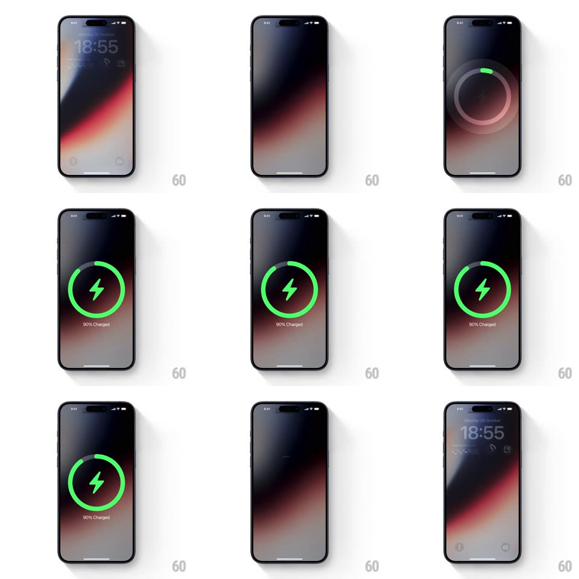

Media
Frame-by-frame

Rebuild this interaction 1:1: Apple's MagSafe charging moment on the lock screen - the screen dims, a dark circular puck wells up, a green charge ring sweeps around a lightning bolt, "90% Charged" fades in below, then the whole overlay dissolves back to the lock screen.

Rebuild this interaction 1:1: Apple's MagSafe charging moment on the lock screen - the screen dims, a dark circular puck wells up, a green charge ring sweeps around a lightning bolt, "90% Charged" fades in below, then the whole overlay dissolves back to the lock screen. ## Integration Integration: stack-agnostic spec - springs given as stiffness/damping, timed motions as duration + curve; map every value to your framework and animation library of choice. ## Scene iOS lock screen (18:55 clock, date, wallpaper). On charger attach, the wallpaper dims and blurs slightly; a centered circular dark puck (~55% of screen width) appears, containing a green lightning bolt surrounded by a green progress ring, with "90% Charged" beneath. ## Motion spec Pattern: charging overlay - puck rise, ring sweep, dissolve. - Lock screen dims (opacity overlay to ~50%, 300ms) as the puck scales in from ~0.7 with a soft spring (~260/20, ~400ms). - Charge ring: a green arc sweeps clockwise around the bolt from 12 o'clock to the charge-level position (~600ms, ease-out); a lighter track ring sits beneath it. - The bolt fades in with the ring start; "90% Charged" fades in below the puck (~250ms, 300ms after the ring starts). - Hold ~1.2s, then the puck scales down and fades (300ms) and the lock screen undims. ## Calibration - Ring sweep is one smooth arc, not a spinning loader - it travels once to the level and stops. - The puck is darker than the dimmed wallpaper: it reads as a physical disc, not a glow. ## Reduced motion Overlay fades in/out (250ms) with the ring already at its final position. ## Don't miss - The clock stays faintly visible behind the dim layer. - The green ring has a visible rounded cap at its end.